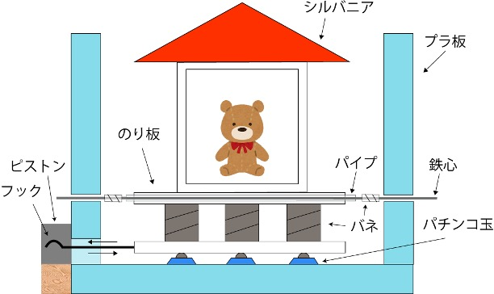

大学の講義で制作したマイコン制御プロジェクト。加速度センサーを用いて貧乏ゆすりの揺れを検知し、その動きを地震の揺れに変換して地震シミュレーション装置で再現するというユニークな作品です。
プロジェクトの目的
貧乏ゆすりという日常的な動作を地震の揺れとして可視化・体験化すること
システム概要
本プロジェクトでは、Arduinoのマイコンボードを使用して加速度センサーからの信号を取得し、その波形データを処理・増幅して、モータを制御する装置に送信します。これにより、貧乏ゆすりの微小な振動を増幅し、実際の地震の揺れのようにシミュレートすることができます。
ハードウェア構成
・Arduino Nano 1台
・加速度センサ（ KXR94-2050 ）
・サーボモータ（ FS5103B ）
・シルバニアファミリー
・各種バネ・配線・接続部品
プログラムについて

マイコンのファームウェアは、加速度センサーから連続的に振動データを取得し、信号処理を実行します。取得した加速度値をフィルタリング処理によってノイズを除去し、指定の倍率で信号を増幅してからアクチュエータへ出力します。これにより、元の振動パターンを保ちながら、より大きな動きとして再現することが可能になります。